Guia del Rework de Phobos - Habilidades Legendarias y Equipos | Hero Wars Alliance
- Por: Alexandre Domingos. .
Phobos siempre ha sido el maestro del miedo en Hero Wars Alliance, pero despues de su rework llevo el control del combate a un nivel completamente nuevo. Con seis habilidades devastadoras que paralizan, maldicen y drenan energia de los enemigos, el nuevo Phobos puede desactivar equipos enteros por si solo. Si alguna vez te sentiste impotente viendo como un Phobos enemigo bloqueaba por completo a tus heroes, esta guia te mostrara exactamente como construir y desatar ese mismo poder aterrador.
Tanto si eres un comandante veterano como si recien comienzas a explorar heroes de control, esta guia desglosa cada formula, cada eleccion de talisman y cada composicion de equipo para convertir a Phobos en la pesadilla que tus rivales nunca querran enfrentar. Entremos en las sombras.
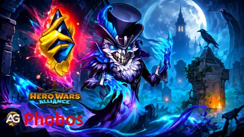
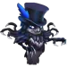
Indice de Phobos
- Quien es Phobos?
- Valoracion General en el Meta
- Pros y Contras
- Comparacion de Estadisticas Maximas de Talisman
- Guia de Talisman
- Prioridad de Mejora de Habilidades de Reliquia Legendaria
- La Mejor Skin para Phobos
- Prioridad de Evolucion de Artefactos
- Prioridad de Evolucion de Glifos
- Como contrarrestar a Phobos
- Sinergias de Phobos
- Los Mejores Equipos para Phobos
- Conclusion
Quien es Phobos en Hero Wars Alliance?
Phobos es un poderoso heroe de Control de la linea trasera de la faccion Camino de la Eternidad. Despues de su rework, se convirtio en uno de los magos mas molestos y disruptivos del juego. Todo su kit gira alrededor de las mecanicas de Maldicion, robo de energia y paralisis, disenadas para desactivar enemigos y abrir ventanas para que tu equipo cause dano devastador.
Phobos funciona especialmente bien con heroes que aplican Maldicion, como Jorgen y Cornelius, creando cadenas de Maldicion devastadoras que amplifican el dano sobre todo el equipo enemigo. Su robo de energia mediante Lazos de Oscuridad y Sello de Agotamiento puede impedir por completo que los rivales usen sus ultimates, inclinando cada combate a tu favor.

- Clase principal: Control
- Posicion: Linea trasera
- Atributo principal: Inteligencia
- Faccion: Camino de la Eternidad
- Como conseguir Soul Stones: Eventos, Cofre Heroico
- Sinergia: Jorgen, Cornelius, Sebastian
Gracias a su rework, Phobos ahora tiene seis habilidades, incluyendo dos habilidades nuevas de Reliquia Legendaria, Cadenas del Miedo y Sello de Agotamiento, que lo convierten en una maquina de control casi autosuficiente. Aunque brilla todavia mas junto a aliados centrados en Maldicion, tambien puede desestabilizar casi cualquier formacion enemiga con su paralisis, reduccion de ataque y manipulacion de energia.
Pros y Contras de Phobos - Hero Wars Alliance
Pros
- Control de masas de elite: Paralisis bloquea al mago mas fuerte mientras reduce las estadisticas de ataque de todos los enemigos durante 12 segundos.
- Potente sinergia de Maldicion: Maestro de Maldiciones inflige dano magico extra cada vez que un enemigo maldito usa una habilidad, escalando todavia mejor en combates largos.
- Dos nuevas habilidades Legendarias anaden paralisis constante y quema de energia sin ninguna accion del jugador.
- Lazos de Oscuridad roba toda la energia del enemigo con mayor Ataque Magico, impidiendo por completo las ultimates rivales.
- La mejora legendaria de Sombra Temida puede reducir la defensa magica a cero y despues anadir dano extra encima.
Contras
- Requiere una gran inversion en Reliquias Legendarias en los niveles 1, 10, 20 y 30 para desbloquear todo su potencial.
- Su posicion en la linea trasera lo hace vulnerable a asesinos y heroes que apuntan a la retaguardia.
- Depende mucho de mantener activa la Maldicion. Si los enemigos limpian las Maldiciones rapidamente, Maestro de Maldiciones pierde gran parte de su valor.
- Durante la canalizacion de Paralisis, Phobos no puede usar otras habilidades y queda expuesto durante 6.5 segundos.
Phobos - Comparacion de Estadisticas Maximas de Talisman
| Estadistica | 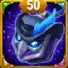 Talisman de Pesadillas |
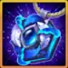 Talisman de Penumbra |
|---|---|---|
Inteligencia |
17,157 |
15,157 |
Agilidad |
3,789 |
3,789 |
Fuerza |
3,644 |
3,644 |
Vida |
720,241 |
901,741 |
Ataque Fisico |
36,599 |
34,599 |
Ataque Magico |
231,011 |
205,211 |
Armadura |
40,200 |
54,000 |
Defensa Magica |
55,401 |
53,401 |
Tenacidad |
1,860 |
1,860 |
Penetracion Magica |
11,538 |
11,538 |
Guia de Talisman de Phobos en Hero Wars Alliance
Phobos tiene dos talismanes, pero solo puedes equipar uno en batalla. A diferencia de las skins, cuyos bonos permanecen activos una vez mejoradas, los bonos del talisman solo se aplican desde el que llevas equipado en ese momento. Como las habilidades mas importantes de Phobos escalan con Ataque Magico y su estilo depende del control y de las mecanicas de Maldicion, tu eleccion de talisman afecta directamente su dano, supervivencia y utilidad para el equipo.
Talisman de Pesadillas
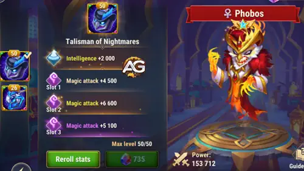
Ranura de estadistica principal: Inteligencia +2,000. Como Inteligencia es el atributo principal de Phobos, cada punto otorga 3 de Ataque Magico, 1 de Defensa Magica y 1 de Ataque Fisico. Eso representa +6,000 Ataque Magico, +2,000 Defensa Magica y +2,000 Ataque Fisico por la conversion base.
Ranura de reroll 1: Ataque Magico +6,600. Ranura de reroll 2: Ataque Magico +6,600. Ranura de reroll 3: Ataque Magico +6,600. En la practica, estas tres ranuras se tratan como un solo valor: Bono total de reroll = Ataque Magico +19,800.
|
Talisman de Pesadillas |
Estadistica principal total |
|---|---|
|
Inteligencia +2,000 |
+6,000 Ataque Magico +2,000 Defensa Magica +2,000 Ataque Fisico |
| Slot 1 | Slot 2 | Slot 3 | Bono total de reroll |
|---|---|---|---|
|
Ataque Magico +6,600 |
Ataque Magico +6,600 |
Ataque Magico +6,600 |
Ataque Magico +19,800 |
Talisman de Penumbra
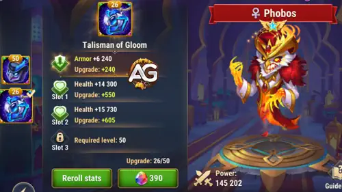
Ranura de estadistica principal: Armadura +12,000. Es un bono defensivo directo que incrementa mucho la supervivencia fisica de Phobos sin necesidad de ninguna conversion.
Ranura de reroll 1: Vida +60,500. Ranura de reroll 2: Vida +60,500. Ranura de reroll 3: Vida +60,500. La suma combinada da: Bono total de reroll = Vida +181,500.
|
Talisman de Penumbra |
Estadistica principal total |
|---|---|
|
Armadura +12,000 |
+12,000 Armadura |
| Slot 1 | Slot 2 | Slot 3 | Bono total de reroll |
|---|---|---|---|
|
Vida +60,500 |
Vida +60,500 |
Vida +60,500 |
Vida +181,500 |
Recomendacion para batalla: equipa el Talisman de Pesadillas en la mayoria de los combates. El valor principal de Phobos proviene de habilidades que escalan con Ataque Magico: Paralisis (35 % del Atq. Mag. + 12,000 por tick), Sombra Temida (35 % del Atq. Mag. + 12,000) y Maestro de Maldiciones (25 % del Atq. Mag. + 6,000 por habilidad maldita). Los +2,000 de Inteligencia ofrecen un escalado inmediato mas fuerte para todas ellas, y los +19,800 de Ataque Magico de los rerolls maximizan todavia mas sus formulas de dano. Usa el Talisman de Penumbra cuando tu equipo se enfrente a mucho burst fisico y Phobos siga muriendo antes de activar Paralisis. Los +12,000 de Armadura y +181,500 de Vida pueden mantenerlo con vida el tiempo suficiente para cambiar el combate.
Consejos de Alexandre: Si tu objetivo es controlar al equipo enemigo y maximizar el dano magico, usa el Talisman de Pesadillas. Los rerolls de Inteligencia + Ataque Magico dan el mejor escalado de formulas para Paralisis, Sombra Temida y Maestro de Maldiciones. Cambia al Talisman de Penumbra solo contra ganchos de Cleaver, equipos de asesinos o burst fisico pesado que mate a Phobos antes de que pueda actuar.
Prioridad de Mejora de las Habilidades de Reliquia Legendaria de Phobos - Hero Wars Alliance
Las reliquias potencian a Phobos con mejor escalado y nuevos efectos. Esta guia explica cada habilidad de forma simple para que mejores primero las correctas.
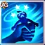
1a - Paralisis
Descripcion en el juego: Paraliza al enemigo con el mayor Ataque Magico durante 6.5 segundos, infligiendo dano cada 0.5 s. El enemigo paralizado no puede moverse ni atacar. El Ataque Magico y el Ataque Fisico de todos los enemigos se reducen durante 12 segundos. Mientras esta habilidad esta activa, Phobos no puede usar otras habilidades.
Explicacion de la habilidad: Paralisis es la ultimate de Phobos y su habilidad mas importante. Bloquea a la mayor amenaza magica durante 6.5 segundos mientras inflige dano magico repetido cada medio segundo, para un total de 13 golpes. Al mismo tiempo, reduce el Ataque Magico y el Ataque Fisico de TODOS los enemigos durante 12 segundos. Con el Talisman de Pesadillas, la formula de dano es 92,853.85 (35 % del Atq. Mag. 231,011 + 12,000) por tick, sumando hasta 1,207,100 en toda la duracion. La reduccion de ataque es de 54,002.2 (20 % del Atq. Mag. 231,011 + 7,800). Esto convierte a Paralisis en un bloqueo devastador de objetivo unico y en un debuff de equipo entero.
Formula con Talisman de Pesadillas
- Formula 1: Dano por 0.5 s: 92,853.85 (35 % × 231,011 + 12,000)
- Formula 2: Reduccion de ataque: 54,002.2 (20 % × 231,011 + 7,800)
Formula con Talisman de Penumbra
- Formula 1: Dano por 0.5 s: 83,823.85 (35 % × 205,211 + 12,000)
- Formula 2: Reduccion de ataque: 48,842.2 (20 % × 205,211 + 7,800)
Info de la animacion de la habilidad
- Palabras clave: Dano magico, Control, Debuff, Maldicion
- Duracion: 6.5 segundos
- Duracion de la reduccion de ataque: 12 segundos
- Golpes: 13 (cada 0.5 s)
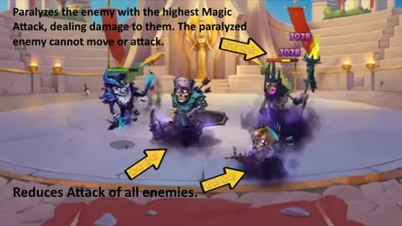
Prioridad de Evolucion: Muy Alta - Esta es la habilidad central de Phobos. Inflige dano sostenido enorme, bloquea al mago mas fuerte y debuffea el ataque de todo el equipo enemigo durante 12 segundos. Subirla aumenta directamente tanto el dano por tick como la reduccion de ataque.
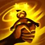
1a - Paralisis (Habilidad Mejorada) Reliquia Legendaria: Nivel 10
Descripcion en el juego: Cada golpe consecutivo aumenta el dano de la habilidad. Cuando termina el efecto, paraliza a los enemigos alrededor del objetivo durante 3 segundos.
Explicacion de la habilidad: Esta mejora legendaria transforma Paralisis de fuerte a devastadora. Cada uno de los 13 golpes ahora inflige dano creciente: el primer golpe hace el dano base, el segundo agrega 13,350.55 (5 % del Atq. Mag. 231,011 + 1,800) con el Talisman de Pesadillas, el tercero agrega esa misma cantidad otra vez, y asi sucesivamente. Para el golpe final, el dano queda enormemente amplificado. Aun mejor: cuando la Paralisis termina, todos los enemigos CERCANOS al objetivo tambien quedan paralizados durante 3 segundos adicionales, convirtiendo un bloqueo de un solo objetivo en un stun de equipo.
Formula con Talisman de Pesadillas
- Formula 1: Aumento de dano por golpe: 13,350.55 (5 % × 231,011 + 1,800)
Formula con Talisman de Penumbra
- Formula 1: Aumento de dano por golpe: 12,060.55 (5 % × 205,211 + 1,800)
Info de la animacion de la habilidad
- Duracion de la Paralisis en area: 3 segundos (al expirar)
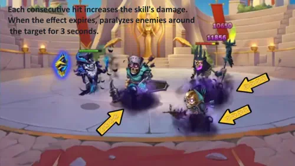
Prioridad de Evolucion: Muy Alta - El dano creciente convierte Paralisis en una nuke de objetivo unico, y la Paralisis en area al expirar aporta un control de team fight excelente que puede encadenarse con las habilidades de tus aliados.
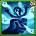
2a - Sombra Temida
Descripcion en el juego: Reduce la Defensa Magica del enemigo con el mayor Ataque Magico durante 4.0 segundos y le inflige dano.
Explicacion de la habilidad: Sombra Temida golpea al enemigo con el mayor Ataque Magico, infligiendo 92,853.85 (35 % del Atq. Mag. 231,011 + 12,000) de dano magico con el Talisman de Pesadillas y reduciendo su Defensa Magica en 63,752.75 (25 % del Atq. Mag. 231,011 + 6,000) durante 4 segundos. Esta combinacion marca al mago enemigo principal para la destruccion, porque todo el dano magico de tu equipo golpea mucho mas fuerte mientras el debuff esta activo.
Formula con Talisman de Pesadillas
- Formula 1: Dano magico: 92,853.85 (35 % × 231,011 + 12,000)
- Formula 2: Reduccion de Defensa Magica: 63,752.75 (25 % × 231,011 + 6,000)
Formula con Talisman de Penumbra
- Formula 1: Dano magico: 83,823.85 (35 % × 205,211 + 12,000)
- Formula 2: Reduccion de Defensa Magica: 57,302.75 (25 % × 205,211 + 6,000)
Info de la animacion de la habilidad
- Palabras clave: Dano magico, Debuff, Maldicion
- Duracion: 4 segundos
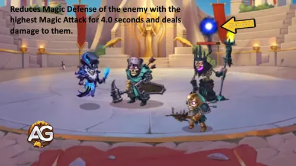
Prioridad de Evolucion: Alta - La reduccion de Defensa Magica es crucial para habilitar el dano de todo tu equipo magico contra objetivos valiosos. Combinada con Paralisis, vuelve extremadamente fragiles a los magos enemigos.
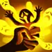
2a - Sombra Temida (Habilidad Mejorada) Reliquia Legendaria: Nivel 20
Descripcion en el juego: Ahora reduce aun mas la Defensa Magica. Cuando llega a cero, el enemigo recibe dano extra.
Explicacion de la habilidad: Esta mejora legendaria sobrecarga Sombra Temida por completo. La reduccion de Defensa Magica salta a 127,505.5 (50 % del Atq. Mag. 231,011 + 12,000) con el Talisman de Pesadillas, suficiente para llevar a cero la Defensa Magica de la mayoria de los enemigos. Cuando la Defensa Magica del objetivo llega a cero, recibe dano magico adicional de 255,011 (100 % del Atq. Mag. 231,011 + 24,000). Es un golpe doble devastador: primero derrites la defensa y despues el dano extra lo borra.
Formula con Talisman de Pesadillas
- Formula 1: Dano magico: 255,011 (100 % × 231,011 + 24,000)
- Formula 2: Reduccion de Defensa Magica: 127,505.5 (50 % × 231,011 + 12,000)
Formula con Talisman de Penumbra
- Formula 1: Dano magico: 229,211 (100 % × 205,211 + 24,000)
- Formula 2: Reduccion de Defensa Magica: 114,605.5 (50 % × 205,211 + 12,000)
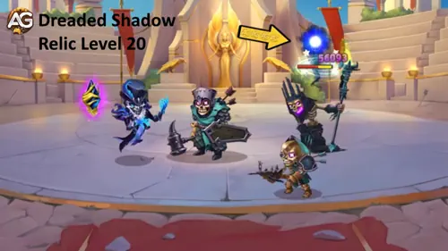
Prioridad de Evolucion: Muy Alta - Reducir la Defensa Magica a cero y luego aplicar dano extra convierte esta mejora en una de las mejoras legendarias mas impactantes del juego. Hace de Sombra Temida una herramienta de remate contra magos enemigos.
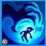
3a - Lazos de Oscuridad
Descripcion en el juego: Lazos de Oscuridad vincula a Phobos con el enemigo con mayor Ataque Magico durante 10.0 segundos, transfiriendo a Phobos toda la energia que el objetivo gane.
Explicacion de la habilidad: Lazos de Oscuridad es la herramienta anti-mago definitiva de Phobos. Durante 10 segundos completos, el heroe enemigo con mayor Ataque Magico no puede ganar NADA de energia, porque toda esa energia fluye hacia Phobos. Imagina a la Iris o al Folio rival intentando cargar sus ultimates devastadoras solo para ver como toda esa energia alimenta la siguiente Paralisis de Phobos. Esta habilidad no tiene formula de dano, pero su valor de control es enorme: retrasa las ultimates clave del enemigo mientras acelera la tuya. La probabilidad de aplicarla disminuye si el nivel del objetivo es superior a 120.
Info de la animacion de la habilidad
- Palabras clave: Control, Maldicion
- Duracion: 10 segundos
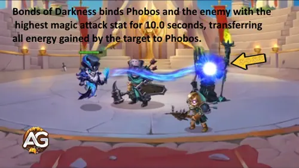
Prioridad de Evolucion: Alta - Robar energia durante 10 segundos es extremadamente valioso en PvP. Impide las ultimates enemigas y acelera la propia Paralisis de Phobos, volviendola una parte clave de su ciclo de control.
Consejos de Alexandre: Lazos de Oscuridad es una habilidad excelente para contrarrestar a Folio e Iris.
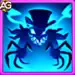
4a - Maestro de Maldiciones (Pasiva)
Descripcion en el juego: Cuando un enemigo maldito usa una habilidad, Phobos le inflige dano. Cuantas mas Maldiciones tenga el enemigo, mayor sera el dano. Solo afecta a los enemigos con los que Phobos empieza la batalla.
Explicacion de la habilidad: Maestro de Maldiciones es el corazon del rework de Phobos. Esta pasiva se activa automaticamente: cada vez que un enemigo maldito usa cualquier habilidad, Phobos lo castiga con 63,752.75 (25 % del Atq. Mag. 231,011 + 6,000) de dano magico por cada Maldicion activa con el Talisman de Pesadillas. Si acumulas varias Maldiciones sobre el mismo objetivo, por ejemplo desde Jorgen, Cornelius y las propias habilidades de Phobos, cada habilidad enemiga dispara una cascada de dano. En peleas largas, esta pasiva acumula una cantidad enorme de dano total sin que Phobos tenga que actuar.
Formula con Talisman de Pesadillas
- Formula 1: Dano por Maldicion (por habilidad enemiga): 63,752.75 (25 % × 231,011 + 6,000)
Formula con Talisman de Penumbra
- Formula 1: Dano por Maldicion (por habilidad enemiga): 57,302.75 (25 % × 205,211 + 6,000)
Info de la animacion de la habilidad
- Palabras clave: Dano magico, Pasiva
- Activacion: cuando un enemigo maldito usa cualquier habilidad
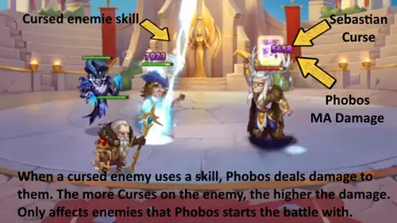
Prioridad de Evolucion: Muy Alta - Esta es la base de todo el kit de Phobos. Cada habilidad con etiqueta de Maldicion usada por tus aliados amplifica esta pasiva, y en equipos cargados de Maldiciones el dano acumulado durante una pelea es enorme. Mejorala junto con Paralisis.
Consejos de Alexandre: Maestro de Maldiciones solo afecta a los enemigos con los que Phobos empieza la batalla. Eso significa que las Tortugas Ninja no se ven afectadas por esta pasiva. Aunque los heroes magicos son especialmente vulnerables a Phobos por sus habilidades con etiqueta de Maldicion, las Tortugas Ninja pueden sobrevivir mas tiempo contra equipos meta con Phobos gracias a su alto dano y su supervivencia basada en vampirismo, lo que las hace mas resistentes que la mayoria de heroes de dano fisico en este enfrentamiento.
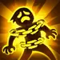
5a - Cadenas del Miedo (Nueva Habilidad) Reliquia Legendaria: Nivel 1
Descripcion en el juego: Paraliza al enemigo mas cercano durante 4 segundos cada 12.0 segundos, comenzando 5 segundos despues del inicio de la batalla.
Explicacion de la habilidad: Cadenas del Miedo es la primera habilidad legendaria completamente nueva de Phobos, desbloqueada en Reliquia nivel 1. Anade control automatico y sin costo que se activa cada 12 segundos sin necesidad de energia. Apenas 5 segundos despues de empezar la batalla, el enemigo mas cercano queda paralizado durante 4 segundos, es decir, en la practica el tanque enemigo queda bloqueado repetidamente durante toda la pelea. Esto crea presion constante sobre la primera linea mientras las otras habilidades de Phobos apuntan a los magos de la retaguardia. Como esta habilidad tiene etiqueta de Maldicion, tambien activa el dano pasivo de Maestro de Maldiciones.
Info de la animacion de la habilidad
- Palabras clave: Control, Maldicion
- Duracion de la Paralisis: 4 segundos
- Enfriamiento: 12 segundos
- Retraso inicial: 5 segundos
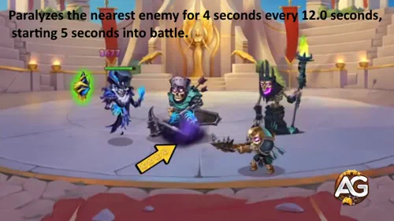
Prioridad de Evolucion: Alta - Paralizar automaticamente cada 12 segundos es extremadamente fuerte. Mantiene interrumpida de forma constante a la primera linea enemiga y activa el dano pasivo de Maestro de Maldiciones, aportando control y DPS durante toda la pelea.
Consejos de Alexandre: Esta habilidad no solo es fuerte contra tanques, sino que tambien hace que Phobos funcione muy bien contra equipos clasicos de Satori y composiciones mas resistentes con Byrna. Si te encuentras con ese equipo, puedes atacar sin dudar.
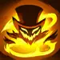
6a - Sello de Agotamiento (Nueva Habilidad) Reliquia Legendaria: Nivel 30
Descripcion en el juego: Maldice al enemigo con mayor Energia 10.0 segundos despues del inicio de la batalla. Cuando el objetivo alcanza la Energia maxima, Phobos quema parte de ella. Cuando el objetivo muere o cuando la Maldicion se activa, se transfiere al enemigo con mas Energia 10.0 segundos despues.
Explicacion de la habilidad: Sello de Agotamiento es la segunda habilidad legendaria nueva de Phobos, desbloqueada en Reliquia nivel 30. Apunta al enemigo que esta mas cerca de usar su ultimate y quema 300 de Energia justo cuando alcanza la carga maxima. Esto significa que los heroes enemigos van perdiendo 300 de Energia justo antes de usar sus habilidades mas potentes, una mecanica anti-ultimate devastadora. Cuando el objetivo muere o el efecto se activa, la Maldicion se transfiere al siguiente enemigo con mas Energia despues de 10 segundos, creando una presion de energia persistente durante toda la batalla.
Info de la animacion de la habilidad
- Palabras clave: Maldicion, Debuff
- Energia quemada: 300
- Retraso inicial: 10 segundos
- Retraso de transferencia: 10 segundos (despues de la muerte del objetivo o de la activacion)
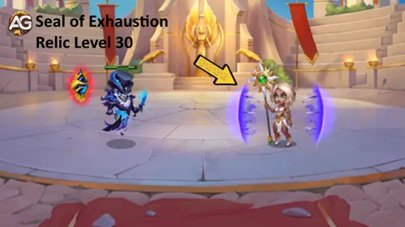
Prioridad de Evolucion: Media Alta - Quemar 300 de Energia es valioso, pero situacional. Combinado con la manipulacion de energia de Jorgen y con Lazos de Oscuridad, crea una asfixia total de energia. Aun asi, el retraso de 10 segundos y el mecanismo de transferencia hacen que sea menos inmediata que otras habilidades de Phobos.
La Mejor Skin para Phobos en Hero Wars Alliance
Aqui descubriras que skins debes subir primero para Phobos en funcion de su escalado de Ataque Magico, valor de control y supervivencia.
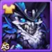
Skin Base
Inteligencia +1,365. Cada punto de Inteligencia otorga 3 de Ataque Magico, 1 de Defensa Magica y 1 de Ataque Fisico. Esto se traduce en +4,095 Ataque Magico, +1,365 Defensa Magica y +1,365 Ataque Fisico. Como las tres principales habilidades de dano de Phobos, Paralisis, Sombra Temida y Maestro de Maldiciones, escalan con Ataque Magico, esta skin mejora absolutamente todo su kit.
Prioridad de Evolucion: Muy Alta - Estadistica central que maximiza todas sus formulas de dano y ademas aporta supervivencia. Siempre deberia ser la primera en subir.
Skin de Ilusionista
Ataque Magico +10,650. Es un aumento directo a todas las formulas de dano de Phobos. Como Paralisis, Sombra Temida y Maestro de Maldiciones escalan con Ataque Magico, esta skin mejora todo su kit ofensivo.
Prioridad de Evolucion: Muy Alta - La mejor skin ofensiva para Phobos. Debe subirse justo despues de la skin base.
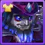
Skin Estelar
Penetracion Magica +10,650. ESTADISTICA CRUCIAL. La Penetracion Magica permite que el dano magico de Phobos atraviese la Defensa Magica enemiga. Sin penetracion, incluso valores altos de Ataque Magico se reducen demasiado contra objetivos con defensa. Esto es especialmente importante para el papel de Sombra Temida como reductor de defensa.
Prioridad de Evolucion: Alta - Skin ofensiva esencial. Priorizala despues de las skins de Inteligencia y Ataque Magico para asegurar dano efectivo maximo contra objetivos resistentes.
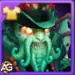
Dark Depths Skin
Defensa Magica +10,650. Aporta resistencia contra dano magico enemigo. Es util contra equipos cargados de magos, pero no mejora directamente el escalado de las habilidades de Phobos.
Prioridad de Evolucion: Media - Es defensiva y situacional. Considerala despues de las skins ofensivas, sobre todo si te enfrentas a composiciones con mucho dano magico.
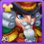
Skin Invernal
Armadura +10,650. Aporta resistencia contra dano fisico. Como Phobos es un heroe de retaguardia, suele sufrir menos presion fisica directa, por lo que esta skin es la menos impactante para su rol.
Prioridad de Evolucion: Baja - Solo destaca contra equipos con burst fisico pesado que alcance la retaguardia.
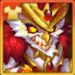
Solar Skin+
Ataque Magico +21,300. La version mejorada de Solar Skin+ duplica el bono de Ataque Magico. Es un aumento ofensivo enorme que potencia directamente las formulas de Paralisis, Sombra Temida y Maestro de Maldiciones. Requiere conseguir la mejora Skin+, pero el costo en piedras por nivel es el mismo que el de una skin normal.
Prioridad de Evolucion: Muy Alta - Inversion de endgame. Los +21,300 de Ataque Magico son el mayor aumento que puede dar una skin, asi que se vuelve prioridad maxima cuando esta disponible.
Prioridad de Artefactos de Phobos en Hero Wars Alliance
Este orden muestra que artefactos debes priorizar para Phobos si quieres mejorar sus habilidades de Maldicion y su apoyo magico al equipo.
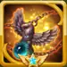
1o - Artefacto de Arma: Raven's Amulet
Probabilidad de activacion: 100 %. Cuando Phobos usa su ultimate Paralisis, este artefacto otorga Defensa Magica +32,040 a todo el equipo durante 9 segundos. Como Paralisis se usa con frecuencia, especialmente porque Phobos carga energia muy rapido mediante Lazos de Oscuridad, este buff defensivo de equipo se activa de forma fiable en cada combate.
Prioridad de Evolucion: Muy Alta - Se activa con la ultimate principal de Phobos y aporta una supervivencia enorme al equipo contra dano magico. Es esencial en PvP, donde los magos enemigos abundan.
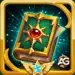
2o - Artefacto de Libro: Tome of Arcane Knowledge
Ataque Magico +10,680, Vida +53,394. Este artefacto da un aumento equilibrado: mas Ataque Magico significa formulas mas fuertes para Paralisis, Sombra Temida y Maestro de Maldiciones, mientras que la Vida adicional ayuda a que Phobos sobreviva mas tiempo, sobre todo durante su canalizacion de Paralisis de 6.5 segundos, cuando no puede moverse ni esquivar.
Prioridad de Evolucion: Alta - Aporte dual solido que mejora directamente tanto el dano como la supervivencia.

3o - Artefacto de Anillo: Ring of Intelligence
Inteligencia +3,990. Cada punto de Inteligencia da a Phobos +3 de Ataque Magico, +1 de Defensa Magica y +1 de Ataque Fisico. Eso equivale a +11,970 Ataque Magico, +3,990 Defensa Magica y +3,990 Ataque Fisico. Es una mejora completa que escala varias estadisticas al mismo tiempo.
Prioridad de Evolucion: Media Alta - Es importante para el escalado general, pero al repartir sus estadisticas en varias areas queda menos enfocada que el arma o el libro.
Prioridad de Glifos de Phobos
Aqui puedes ver que glifos debes subir primero en Phobos para maximizar su control y su dano magico.
1o - Glifo de Ataque Magico
Estadisticas a nivel 80: +12,850 de Ataque Magico. Todas las habilidades de dano de Phobos escalan directamente con Ataque Magico: Paralisis, Sombra Temida y Maestro de Maldiciones usan formulas basadas en porcentajes de Ataque Magico. Subir esta estadistica aumenta cada calculo de dano de todo su kit.
Prioridad de Evolucion: Muy Alta - Potencia directamente cada habilidad ofensiva. Es la base del rol de Phobos como hibrido de control y dano.
2o - Glifo de Armadura
Estadisticas a nivel 80: +12,850 de Armadura. Aunque Phobos es un heroe de retaguardia, la Armadura le da supervivencia contra fuentes de dano fisico, incluidos asesinos que saltan a la retaguardia y habilidades fisicas de area.
Prioridad de Evolucion: Media - Es una estadistica defensiva que no mejora su escalado de habilidades. Mejorala despues de los glifos ofensivos.
3o - Glifo de Vida
Estadisticas a nivel 80: +122,800 de Vida. Mas Vida ayuda a que Phobos sobreviva el tiempo suficiente para completar la canalizacion de Paralisis, durante la cual no puede usar otras habilidades. Es especialmente importante contra equipos que atacan la retaguardia.
Prioridad de Evolucion: Alta - La supervivencia es clave para un heroe que necesita tiempo para canalizar habilidades y mantener su control activo.
4o - Glifo de Defensa Magica
Estadisticas a nivel 80: +12,850 de Defensa Magica. Ayuda a Phobos a resistir dano magico enemigo. Es util en mirror matches y contra composiciones cargadas de magos, pero no aumenta sus capacidades ofensivas.
Prioridad de Evolucion: Media - Aporte defensivo contra magos. Mejoralo despues de Vida y Ataque Magico.
5o - Glifo de Inteligencia
Estadisticas a nivel 80: +2,110 de Inteligencia. Cada punto de Inteligencia da +3 de Ataque Magico, +1 de Defensa Magica y +1 de Ataque Fisico. Eso se traduce en +6,330 Ataque Magico, +2,110 Defensa Magica y +2,110 Ataque Fisico. Es un aumento multiestadistica que mejora el poder general de Phobos.
Prioridad de Evolucion: Alta - Escala varias estadisticas a la vez, incluido el Ataque Magico que alimenta todas sus formulas de dano. Es una excelente prioridad secundaria despues del glifo de Ataque Magico.
Como contrarrestar a Phobos - Hero Wars Alliance
Cleaver
El gancho de Cleaver puede sacar a Phobos de la retaguardia segura y arrastrarlo al frente, donde queda extremadamente vulnerable al dano fisico. Como Phobos tiene poca supervivencia cuando queda expuesto, un gancho bien colocado normalmente significa su eliminacion inmediata antes de que pueda activar Paralisis.
Tortugas Ninja
Las Tortugas Ninja son counters fuertes de Phobos porque no se ven afectadas por su pasiva Maestro de Maldiciones, que solo golpea a los enemigos presentes al inicio del combate. Eso les permite evitar una parte central de su control por completo. Ademas, su alto dano y su supervivencia basada en vampirismo les permiten resistir mucho mejor el dano magico sostenido de Phobos que la mayoria de heroes en este enfrentamiento.
Rufus
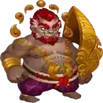
El escudo de inmunidad magica de Rufus bloquea por completo todo el dano magico de Phobos. Como cada una de las habilidades ofensivas de Phobos hace dano magico, Rufus puede anular toda su presion ofensiva durante la duracion del escudo y darle a tu equipo tiempo crucial para actuar.
Sinergias de Phobos en Hero Wars Alliance
Cornelius
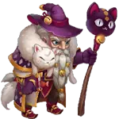
La 1a habilidad de Cornelius aplica Maldicion al enemigo con mayor Inteligencia. Combinado con Phobos, que apunta al heroe con mayor Ataque Magico, generan una doble presion de Maldicion sobre el mago enemigo clave. Cada Maldicion adicional acumulada activa mas dano de Maestro de Maldiciones, lo que vuelve devastadora a la dupla contra equipos magicos.
Corvus
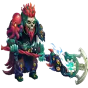
Corvus reduce la defensa de los enemigos y aumenta el ataque de sus aliados. Junto con Morrigan crea una primera linea no-muerta que protege a Phobos, permitiendole canalizar Paralisis con seguridad y mantener su ciclo de Maldiciones sin quedar expuesto a la agresion enemiga.
Faceless
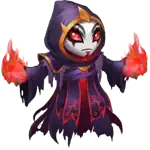
Faceless puede copiar la ultima habilidad enemiga usada, anadiendo otra capa de control al equipo de Phobos. Su amplificacion de dano magico tambien mejora el dano de Phobos. En muchos equipos top con Phobos, Faceless funciona como un multiplicador que castiga aun mas lo que el enemigo no consigue frenar.
Jorgen
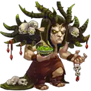
Jorgen es la sinergia numero 1 de Phobos. Su 3a habilidad aplica Maldicion y alimenta directamente la pasiva Maestro de Maldiciones. Su manipulacion de energia se combina con Sello de Agotamiento y con Lazos de Oscuridad para crear una asfixia total de energia: el equipo enemigo simplemente no puede cargar sus ultimates.
Morrigan
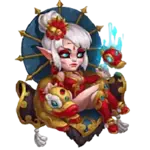
Morrigan trabaja con Corvus para crear una primera linea no-muerta resistente. Puede levantar enemigos caidos como aliados no-muertos, aportando dano extra e interrupcion adicional. Sus habilidades complementan el control de Phobos con una presion sostenida que abruma a equipos ya debilitados por Maldiciones y drenaje de energia.
Sebastian
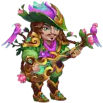
La 3a habilidad de Sebastian conserva la etiqueta de Maldicion, alimentando la pasiva Maestro de Maldiciones de Phobos. Ademas, aporta buffs de golpe critico y proteccion contra debuffs al equipo, haciendo que los aliados sean mas dificiles de controlar. Es un soporte versatil que mejora tanto la sinergia de Maldicion de Phobos como la resistencia general del equipo.
Los Mejores Equipos para Phobos en Hero Wars Alliance
- Corvus, Morrigan, Phobos, Cornelius, Iris
- Corvus, Morrigan, Phobos, Faceless, Jorgen
- Corvus, Morrigan, Phobos, Faceless, Cornelius
- Corvus, Andvari, Keira, Morrigan, Phobos
- Astaroth, Jorgen, Amira, Phobos, Faceless
- Corvus, Morrigan, Keira, Phobos, Faceless
- Corvus, Morrigan, K'arkh, Phobos, Faceless
Phobos contra la Hydra - Hero Wars Alliance
Actualmente, Phobos no es uno de los mejores heroes para la Hydra. Su kit esta disenado para control en PvP y sinergias de Maldicion, no para dano sostenido de objetivo unico contra jefes Hydra.
Aun asi, Phobos puede aportar en composiciones niche de Hydra donde su Ataque Magico y la reduccion de Defensa Magica de Sombra Temida ayuden al equipo a infligir mas dano. Si estas armando un equipo de Hydra enfocado en dano magico y necesitas un poco mas de reduccion de Defensa Magica, Phobos puede funcionar como soporte ofensivo, pero para DPS puro contra Hydra existen opciones claramente mejores.
Conclusion - Guia de Phobos en Hero Wars Alliance
El rework de Phobos lo transformo de un heroe de control solido en uno de los disable mas aterradores de Hero Wars Alliance. Con seis habilidades, incluyendo dos nuevas habilidades de Reliquia Legendaria, ahora puede paralizar, maldecir, drenar energia y destruir la Defensa Magica de equipos enemigos enteros.
La clave para dominar a Phobos esta en entender el ecosistema de Maldicion. Construye tu equipo alrededor de heroes que puedan aplicar y mantener Maldicion, juega con el Talisman de Pesadillas para maximizar el escalado de Ataque Magico y prioriza primero Maestro de Maldiciones, Paralisis y la mejora legendaria de Sombra Temida.
Tanto en ataque como en defensa, Phobos genera una presion de control unica que obliga a los rivales a construir sus equipos pensando especificamente en contrarrestarlo. Con la composicion correcta y la inversion adecuada, el nuevo Phobos hara que tus enemigos se lo piensen dos veces antes de entrar al combate.
Ahora te toca a ti: desata el miedo en el campo de batalla con Phobos.
Descubre nuevas habilidades con nuestras guias destacadas
Deja tu opinion
Te gusto nuestra Guia del Rework de Phobos? Hay algo que no hayas entendido o quieres sugerir algun cambio? Te invitamos a participar en nuestra seccion de comentarios en la pagina del blog Alexandre Games. Sientete libre de compartir tu opinion, aclarar tus dudas y enviar tus sugerencias.
Haz clic en el boton de abajo para comenzar: